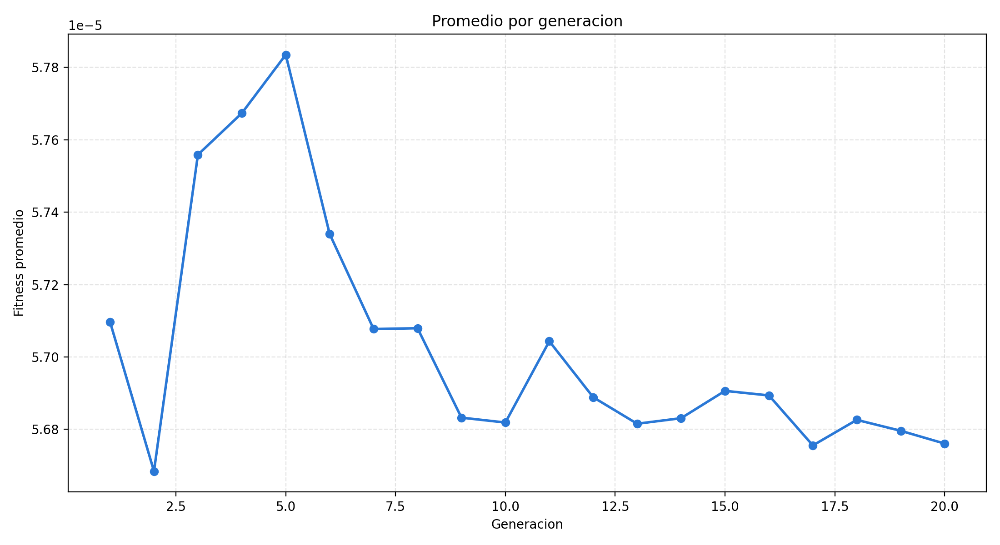
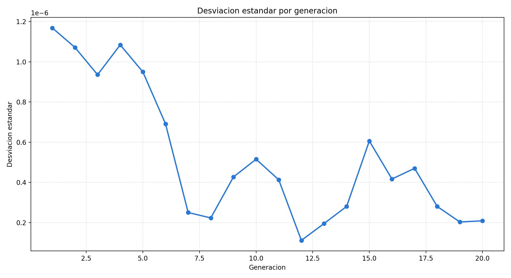
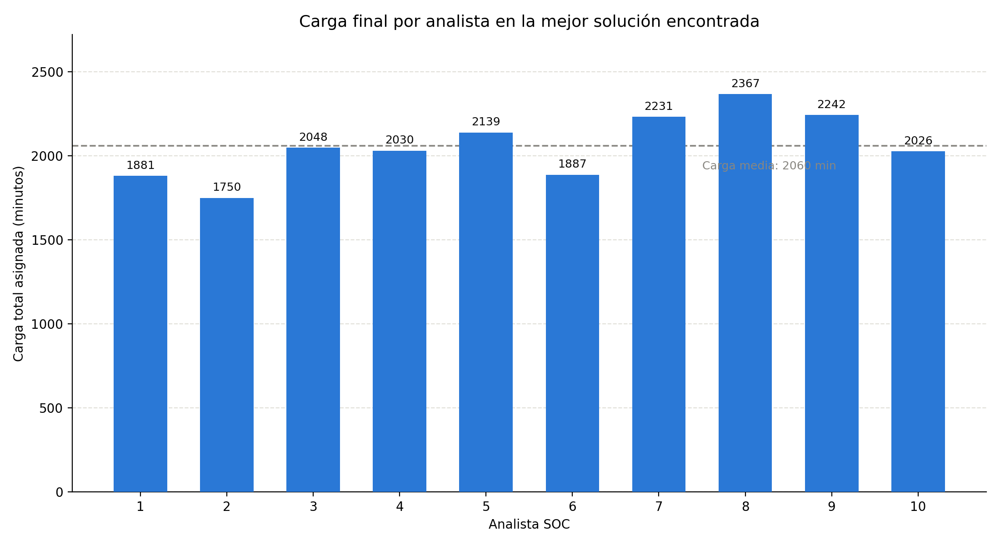

Los puntos 1 (Carátula) y 2 (Índice) corresponden a las secciones anteriores de este documento.
3. Denominación del futuro proyecto de investigación
Optimización mediante Algoritmos Genéticos de la asignación y el balance de carga de alertas de seguridad en Centros de Operaciones de Seguridad (SOC)
La denominación delimita el proyecto en tres dimensiones complementarias: la técnica empleada —los algoritmos genéticos, dentro de la familia de las metaheurísticas evolutivas—, el problema de optimización combinatoria abordado —la asignación de tareas (scheduling) y el balance de carga entre recursos humanos limitados— y el dominio de aplicación —la operación de un Centro de Operaciones de Seguridad—. El enfoque se centra en distribuir alertas entre analistas humanos con el propósito de reducir los tiempos de resolución, evitar la sobrecarga puntual de cada analista y mejorar el cumplimiento de los plazos de atención comprometidos.
4. Situación problemática
Los Centros de Operaciones de Seguridad (SOC) reciben un volumen de alertas que crece con mayor velocidad que la disponibilidad de analistas capacitados para atenderlas. Jalalvand et al. (2025) [1] sistematizan los criterios y métodos empleados en la última década para priorizar alertas y señalan que la sobrecarga (alert overload) es uno de los problemas estructurales más persistentes de la operación de un SOC, ya que obliga a decidir con información incompleta y bajo presión de tiempo qué atender primero.
Esa sobrecarga tiene un correlato humano documentado: la fatiga de alertas (alert fatigue). Tariq et al. (2025) [2] identifican como causas principales el volumen de eventos, la proporción de falsos positivos, la falta de contexto en cada alerta y el diseño de las herramientas, y advierten que esta fatiga degrada la calidad de las decisiones de triaje, incrementa el tiempo de respuesta y favorece la rotación del personal capacitado. El resultado es un ciclo que se retroalimenta: más alertas, analistas menos efectivos y tiempos de respuesta más largos, con el agravante de que la demora en atender una alerta de alta severidad incrementa el riesgo de que una intrusión progrese sin ser contenida.
A esta escasez estructural se suma un problema de coordinación: aun cuando el equipo de analistas es suficiente en promedio, la forma en que las alertas se reparten entre ellos rara vez es óptima. Las prácticas habituales de asignación —turnos fijos, reglas estáticas por tipo de alerta o asignación manual según disponibilidad aparente— no consideran de forma simultánea la prioridad de cada alerta, el plazo de resolución comprometido (SLA), el tiempo estimado que insumirá resolverla y la carga ya acumulada por cada analista. El resultado observado en la práctica es un desbalance de carga: algunos analistas acumulan backlog mientras otros permanecen subutilizados, y las alertas críticas no siempre son atendidas por quien está en condiciones de resolverlas dentro del plazo comprometido. Las investigaciones sobre priorización adaptativa de alertas confirman que se trata de un problema de optimización bajo restricciones y no de una tarea resoluble con reglas fijas [3].
En síntesis, la situación problemática combina tres factores que se retroalimentan: un volumen de alertas que excede la capacidad de análisis manual eficiente, el riesgo de incumplir los plazos de atención en alertas críticas cuando la asignación no prioriza correctamente, y la ausencia de mecanismos de asignación que balanceen la carga entre analistas de forma sistemática y verificable. Investigar este problema es relevante porque afecta directamente la capacidad de un SOC de contener incidentes a tiempo, y porque, como se desarrolla en el marco teórico, admite ser formulado como un problema de optimización combinatoria abordable con algoritmos genéticos.
5. Problema
La asignación manual o basada en reglas fijas de alertas de seguridad a los analistas de un Centro de Operaciones de Seguridad no logra, de manera consistente, minimizar simultáneamente el tiempo total de resolución, el incumplimiento de los SLA de las alertas críticas y el desbalance de carga entre analistas; por ello, resulta necesario investigar una estrategia de asignación basada en Algoritmos Genéticos que distribuya las alertas, caracterizadas por su prioridad, severidad, tiempo estimado de resolución y SLA, entre un número limitado de analistas de forma óptima y verificable.
6. Objetivos de la investigación
6.a. Objetivo general
Diseñar, implementar y evaluar un modelo de Algoritmo Genético Canónico que optimice la asignación de alertas de seguridad a los analistas de un Centro de Operaciones de Seguridad, minimizando de forma conjunta el tiempo total de resolución, el incumplimiento de los SLA en alertas críticas, el backlog y el desbalance de carga entre analistas.
6.b. Objetivos específicos
- Diseñar una representación cromosómica que codifique una asignación completa de alertas a analistas, donde cada gen indique el analista responsable de resolver la alerta correspondiente.
- Formular una función de fitness que combine el tiempo total estimado de resolución con penalizaciones verificables por espera, incumplimiento de SLA y desbalance de carga, de modo que dos asignaciones distintas puedan compararse de forma medible.
- Implementar el operador de selección de padres por ruleta propio del algoritmo genético canónico, registrando el fitness obtenido generación a generación para verificar la convergencia del modelo.
- Registrar la evolución del fitness máximo, mínimo y promedio a lo largo de las generaciones, con el fin de verificar de forma comprobable la mejora progresiva del algoritmo.
- Cuantificar, a partir del mejor cromosoma hallado en cada corrida, la distribución final de alertas y de carga horaria entre analistas, para comprobar el grado de equilibrio efectivamente alcanzado por el modelo.
- Medir el tiempo de ejecución del procedimiento evolutivo, a fin de contrastar de forma realizable la calidad de la solución obtenida con su costo computacional.
7. Marco teórico
Este apartado asienta los conceptos teóricos relacionados con el proyecto de investigación. Sirven para la justificación de las decisiones de diseño que se toman en la representación del problema y en la elección de operadores, para dar soporte a la implementación desarrollada, para comprender claramente el aporte teórico del trabajo y para sostener la discusión de los resultados obtenidos. El marco teórico desarrollado a continuación servirá además como base para la exposición teórica sobre el tema en la instancia oral.
7.1. Optimización, metaheurísticas y algoritmos genéticos
Un problema de optimización consiste en encontrar, dentro de un conjunto de soluciones factibles delimitado por un conjunto de restricciones, aquella solución que minimiza o maximiza una función objetivo. Cuando ese conjunto de soluciones factibles es finito pero de tamaño exponencial respecto de las variables de decisión —como ocurre al repartir un conjunto de tareas entre un conjunto de recursos—, se habla de optimización combinatoria; en estos casos, los métodos exactos, que garantizan el óptimo, suelen volverse computacionalmente intratables a medida que crece el tamaño de la instancia.
Las metaheurísticas son procedimientos de búsqueda de propósito general que renuncian a la garantía de optimalidad a cambio de explorar de manera eficiente espacios de soluciones demasiado grandes para enumerarse exhaustivamente. Los algoritmos genéticos (AG) son metaheurísticas poblacionales inspiradas en la selección natural: mantienen un conjunto de soluciones candidatas —la población— y las hacen evolucionar generación a generación mediante operadores estocásticos de selección, cruza y mutación, guiados por una función de aptitud (fitness) que mide qué tan buena es cada solución respecto de la función objetivo del problema. Esta capacidad de explorar espacios combinatorios sin enumerarlos exhaustivamente los vuelve apropiados para problemas de optimización con restricciones, como el scheduling de tareas entre recursos limitados.
7.2. Componentes de un algoritmo genético canónico
Un algoritmo genético canónico se define por un conjunto fijo de componentes que se instancian de manera particular en cada problema. La Tabla 1 resume su definición general y su correspondencia concreta con el problema de asignación de alertas en un SOC, tal como está documentado en la estructura del programa desarrollado para este trabajo.
| Componente | Definición general | Instanciación en el problema SOC |
|---|---|---|
| Individuo / cromosoma | Codificación de una solución candidata completa | Vector con un gen por alerta; el gen en la posición i indica el analista asignado a la alerta i |
| Función de fitness | Medida numérica de la calidad de una solución | fitness = 1 / (1 + tiempo total estimado + penalización), donde la penalización combina espera, alertas críticas fuera de SLA, backlog y desbalance de carga |
| Selección | Mecanismo que favorece a los individuos más aptos para reproducirse | Selección por ruleta (probabilidad de reproducción proporcional al fitness) |
| Cruza (crossover) | Combina el material genético de dos padres para generar descendencia | Cruza de un punto sobre el vector de asignaciones alerta–analista |
| Mutación | Introduce variabilidad aleatoria para evitar la convergencia prematura | Reasignación del analista correspondiente a una alerta elegida al azar |
Fuente: elaboración propia a partir de la estructura de funciones documentada en TPI/README.md (generar_poblacion(), calcular_fitness(), seleccion_ruleta(), crossover(), mutacion()).
7.3. Scheduling, Job Shop Scheduling y balanceo de carga
El scheduling es el problema de asignar un conjunto de tareas a un conjunto de recursos a lo largo del tiempo, optimizando algún criterio (tiempo total, cumplimiento de plazos, uso equilibrado de los recursos). Una de sus variantes clásicas es el Job Shop Scheduling, donde un conjunto de trabajos debe programarse sobre máquinas con restricciones de precedencia y capacidad; existen antecedentes concretos de algoritmos genéticos aplicados a esta variante en entornos de manufactura [4]. Un problema estrechamente relacionado es el balanceo de carga (load balancing), que busca repartir unidades de trabajo entre recursos de manera que ninguno quede sobrecargado ni ocioso; también existen antecedentes de algoritmos genéticos aplicados al balanceo dinámico de carga entre recursos computacionales en sistemas distribuidos [5]. El problema de asignación de alertas a analistas de un SOC comparte la estructura de fondo de ambas variantes: unidades de trabajo heterogéneas —las alertas, con distinta prioridad y tiempo estimado— que deben repartirse entre recursos limitados —los analistas— minimizando el tiempo total y el desbalance de carga, lo que respalda la pertinencia de adaptar un algoritmo genético canónico a este dominio.
7.4. Centros de Operaciones de Seguridad: SIEM, sobrecarga y fatiga de alertas
Un Centro de Operaciones de Seguridad (SOC) es el equipo y la infraestructura responsables de monitorear, detectar y responder a incidentes de ciberseguridad en una organización. Su principal fuente de trabajo son las alertas generadas por plataformas de gestión de eventos e información de seguridad (SIEM, por sus siglas en inglés), que centralizan y correlacionan los eventos reportados por sistemas de detección de intrusiones, antivirus y firewalls. Cuando el volumen de alertas generado supera la capacidad de análisis manual, se produce la sobrecarga de alertas (alert overload) [1]; cuando esa sobrecarga se sostiene en el tiempo y degrada la capacidad de decisión de los analistas, se habla de fatiga de alertas (alert fatigue) [2]. Ambos conceptos son la base teórica que justifica modelar la asignación de alertas como un problema de optimización explícito, en lugar de dejarlo librado a criterios manuales.
Referencias bibliográficas
Referencias que respaldan el punto 7 (Marco Teórico) — la guía pide que el marco teórico "sea rico en referencias bibliográficas", no una sección numerada aparte.
- Jalalvand, F.; Baruwal Chhetri, M.; Nepal, S.; Paris, C. (2025). «Alert Prioritisation in Security Operations Centres: A Systematic Survey on Criteria and Methods». ACM Computing Surveys, 57(2). https://dl.acm.org/doi/10.1145/3695462
- Tariq, S.; Baruwal Chhetri, M.; Nepal, S.; Paris, C. (2025). «Alert Fatigue in Security Operations Centres: Research Challenges and Opportunities». ACM Computing Surveys, 57(9), art. 224. https://dl.acm.org/doi/10.1145/3723158
- «Adaptive Alert Prioritisation in Security Operations Centres via Learning to Defer with Human Feedback» (2025). arXiv:2506.18462. https://arxiv.org/abs/2506.18462
- «Algoritmo Genético Simple para Resolver el Problema de Programación de la Tienda de Trabajo (Job Shop Scheduling)» (2018). SciELO Chile. https://www.scielo.cl/scielo.php?script=sci_arttext&pid=S0718-07642018000500299
- Luna Rosas, F. J.; Tristán Ávila, R.; Martínez Pedroza, J. de J. (2003). «Aplicando un algoritmo genético para balancear carga dinámicamente en ambientes distribuidos orientados a objetos (CORBA)». ConCiencia Tecnológica, N.º 23. https://dialnet.unirioja.es/servlet/articulo?codigo=6482681
- Sharafaldin, I.; Lashkari, A. H.; Ghorbani, A. A. (2018). «Toward Generating a New Intrusion Detection Dataset and Intrusion Traffic Characterization». Proceedings of the 4th International Conference on Information Systems Security and Privacy (ICISSP), pp. 108–116. https://www.unb.ca/cic/datasets/ids-2017.html
Material complementario — Evidencia del modelo implementado
Esta sección corresponde conceptualmente a la Segunda Parte (Concreción del Modelo) de la guía de cátedra, que la propia guía indica compartir aparte, en una carpeta de Google Drive con la cátedra. No es uno de los 7 puntos exigidos en esta entrega (Primera Parte); se incluye acá únicamente como evidencia complementaria de que el modelo ya corre sobre datos reales.
El prototipo (TPI/main.py) ya está corriendo sobre datos reales. Las 500 alertas del modelo se derivaron por muestreo aleatorio de CICIDS2017 [6], un dataset público de tráfico de red (225.745 flujos, captura del viernes con ataque DDoS, columna Label en {DDoS, BENIGN}). Como el dataset no trae campos operativos de SOC, la prioridad y la severidad de cada alerta se derivaron del Label combinado con la intensidad del tráfico (Flow Bytes/s, Flow Packets/s); el SLA y el tiempo estimado de resolución se calcularon con la misma política y fórmula ya documentadas en la Tabla 1 del marco teórico; y la llegada de cada alerta se derivó del orden real de captura de los flujos, reescalado al horizonte de 8 horas. La muestra resultante quedó compuesta por 85 alertas Críticas, 207 Altas, 111 Medias y 97 Bajas.
| Mejor fitness global | Tiempo total estimado (min) | Backlog (alertas) | Desbalance de carga | Tiempo de ejecución (s) |
|---|---|---|---|---|
| 5,9584 × 10⁻⁵ | 2377 | 386 | 0,0873 | 0,0587 |
Fuente: TPI/outputs/resumen_resultados_soc.csv, corrida con semilla 42 sobre la muestra derivada de CICIDS2017.
La mejor solución encontrada por el algoritmo alcanza un fitness de 5,9584 × 10⁻⁵, con un tiempo total estimado de 2377 minutos y un desbalance de carga de 0,0873 entre los 10 analistas. El fitness promedio de la población mejora de forma irregular a lo largo de las 20 generaciones (Figura 1), reflejo típico de la selección por ruleta: al ser proporcional al fitness, su presión selectiva es más suave que la de otros mecanismos y admite retrocesos puntuales en el promedio poblacional sin perder al mejor individuo encontrado hasta el momento.
| Analista | Alertas asignadas | Carga total (min) | Alertas críticas | Severidad promedio |
|---|---|---|---|---|
| 1 | 49 | 1881 | 6 | 50,5 |
| 2 | 41 | 1750 | 8 | 54,5 |
| 3 | 49 | 2048 | 7 | 54,4 |
| 4 | 49 | 2030 | 8 | 54,0 |
| 5 | 47 | 2139 | 11 | 59,0 |
| 6 | 47 | 1887 | 9 | 52,3 |
| 7 | 53 | 2231 | 9 | 54,8 |
| 8 | 61 | 2367 | 7 | 49,6 |
| 9 | 52 | 2242 | 10 | 56,0 |
| 10 | 52 | 2026 | 10 | 50,9 |
Fuente: TPI/outputs/distribucion_final_alertas_soc.csv.
La carga total osciló entre 1750 y 2367 minutos (media de 2060 minutos), un rango amplio coherente con que el tráfico DDoS real concentra picos de intensidad más marcados que una distribución uniforme. Con 500 alertas para 10 analistas en un horizonte de 8 horas, la carga total demandada (≈20.600 minutos) excede ampliamente la capacidad disponible (4800 minutos), lo que explica el backlog observado (386 de 500 alertas): es una limitación estructural de la dotación de analistas frente al volumen de alertas, no un defecto del algoritmo, y es precisamente el tipo de diagnóstico cuantitativo que este modelo permite obtener.
Figuras




Hipótesis puesta a prueba y trabajo futuro
Con este software se puso a prueba la hipótesis de que la asignación de alertas de un SOC puede formularse y resolverse como un problema de optimización combinatoria mediante un Algoritmo Genético Canónico, obteniendo una asignación medible y verificable. Los resultados sobre datos reales de CICIDS2017 confirman esa hipótesis: el algoritmo produjo una asignación válida, con fitness, tiempo total y desbalance de carga cuantificados generación a generación. Algunos objetivos de este proyecto son a largo plazo y quedan abiertos para continuar la investigación tomando este software como base: comparar el resultado obtenido contra una asignación manual o basada en reglas fijas como línea de base explícita, evaluar el modelo sobre alertas provenientes de un SIEM en producción, y ajustar el tamaño de población y el número de generaciones para estudiar el compromiso entre calidad de la solución y costo computacional.
Especificación técnica (hardware, software e infraestructura)
| Componente | Detalle |
|---|---|
| Lenguaje | Python 3.13.3 (64 bits) |
| Bibliotecas | pandas 3.0.3, numpy 2.2.6, matplotlib 3.10.9 (versiones mínimas fijadas en requirements.txt: pandas ≥2.0, numpy ≥1.24, matplotlib ≥3.7) |
| Sistema operativo | Windows 11 Pro (build 10.0.26200) |
| Infraestructura | Ejecución local, sin GPU ni cómputo distribuido: una notebook/PC de escritorio estándar es suficiente. Una corrida completa (20 generaciones × 500 alertas) toma menos de 1 segundo de cómputo puro. |
| Almacenamiento | Dataset fuente ≈77 MB (TPI/dataset/); salidas generadas ≈1 MB de CSV y figuras (TPI/outputs/) |
| Control de versiones | Git, repositorio compartido por el equipo |
Reproducible ejecutando cd TPI && python3 -m pip install -r requirements.txt && python3 main.py desde la raíz del repositorio; regenera outputs/ completo a partir del dataset en TPI/dataset/.